Primer mes completo de Alma House en redes y en pauta. Abrimos la cuenta de Instagram casi desde cero y conectamos con las primeras clientas por WhatsApp. Septiembre empujó fuerte; octubre se frenó por dos razones que ya identificamos y que tienen solución.
Dos campañas de mensajes para abrir conversación por WhatsApp (17–24 sep), una campaña de tráfico de marca (desde el 28 sep) y una de reclutamiento de manicuristas (desde el 5 oct). Las dos últimas quedaron sin entrega desde el 10 de octubre.
| Campaña | Resultado | Costo / res. | Invertido | Alcance | Frec. | CPM | CTR enlace |
|---|---|---|---|---|---|---|---|
| Mensajes A 17–24 sep · completada | 25 conversaciones | $2.000 | $49.997 | 1.487 | 3,99 | $8.418 | 1,35% |
| Mensajes B 17–24 sep · completada | 30 conversaciones | $3.331 | $99.942 | 3.591 | 1,91 | $14.579 | 0,89% |
| Campaña 01 · tráfico 28 sep – 9 oct | 2.000 clics al enlace | $145 | $290.165 | 14.503 | 2,89 | $6.918 | 4,77% |
| Manicuristas 02 · reclutamiento 5 – 9 oct | 425 clics al enlace | $74 | $31.456 | 7.673 | 2,22 | $1.843 | 2,49% |
| Total | 55 conv. · 2.425 clics | — | $471.560 | — | — | $6.568 | 3,57% |
Alcance no se suma entre campañas (las mismas personas pueden estar en varias). Ventana de atribución: 7 días clic / 1 día vista. Cifras en COP.
Quedan ≈ $148.400 sin ejecutar por la pausa del medio de pago.
13 publicaciones en el feed de Instagram (7 reels, 5 carruseles, 1 foto) y 57 historias. Ninguna publicación del feed se promocionó: el alcance de estas piezas es de la narrativa por capítulos.
| Fecha | Pieza | Formato | Visualiz. | Interacc. | Coment. | Guard. |
|---|---|---|---|---|---|---|
| 16 sep | Alma House es el nail bar que acaba de abrir | Reel | 2.146 | 92 | 9 | 2 |
| 5 oct | #nailbarcajicá (reel de octubre) | Reel | 1.488 | 58 | 4 | 1 |
| 28 sep | No es un capricho. Es tu nuevo estándar | Reel | 1.288 | 45 | 4 | 1 |
| 27 sep | Frases que nunca vas a escuchar en Alma House | Carrusel | 1.137 | 20 | 0 | 0 |
| 25 sep | Un cafecito, un momento de desconexión | Reel | 1.129 | 32 | 0 | 0 |
| 29 sep | Toda casa tiene quien te abra la puerta | Reel | 1.031 | 45 | 0 | 2 |
| 1 oct | Tu mejor carta de octubre | Carrusel | 1.014 | 12 | 0 | 1 |
| 25 sep | Esto no es un spa de uñas. Es una casa | Carrusel | 938 | 21 | 0 | 0 |
| 2 oct | Tu próxima parada favorita | Reel | 806 | 21 | 1 | 0 |
| 14 oct | Una mujer todoterreno primeras horas | Reel | 567 | 41 | 0 | 0 |
| 6 oct | La edición de octubre. Cinco tonos | Carrusel | 245 | 10 | 3 | 0 |
| 8 oct | Toda casa tiene sus códigos | Carrusel | 242 | 3 | 0 | 0 |
| 14 oct | Tienes una cita… 15% miércoles recién publicado | Foto | 55 | 1 | 0 | 0 |
| 7 oct | 15% todos los miércoles | Solo FB | 16 | 1 | 0 | 0 |
| 18 sep | No es una manicure… | Solo FB | 71 | 2 | 0 | 0 |
Los reels promedian 1,8 veces las visualizaciones de un carrusel y traen 2–4 veces más interacción. La semana del 6 al 12 de octubre salió sin reels y fue la peor del mes. Meta mínima: 1 reel por semana de producción audiovisual, además de los dos posts de martes y jueves.
Tres piezas salieron solo en Facebook (página con 9 seguidores): la vacante del 16 sep, el reel del 18 sep y la promo del 7 oct. La promo de Miércoles de Octubre perdió así dos de sus cuatro miércoles en Instagram. Desde ahora, toda programación en Business Suite se revisa con Instagram + Facebook marcados antes de publicar.
Solo 7 guardados en todo el mes, aunque varios copys dicen "guárdalo". La gente guarda lo que le sirve: guías de tonos, cuidados, formas según la mano. Los carruseles editoriales sostienen la marca; ahora necesitan también utilidad.
Las historias promedian 296 visualizaciones pero 0 respuestas. Faltan encuestas, cajas de preguntas, "elige tu tono" y llamados a escribir por DM. También hay 10 comentarios sin responder: responder en menos de 24 horas es parte de la experiencia de la casa.
Los mejores reels abren con una frase que provoca ("No es un capricho…", "Alma House es el nail bar que…"). El reel del 5 oct funcionó aun sin copy, pero con un gancho escrito hubiera rendido más. Cada pieza sale con hook en pantalla y primera línea del caption pensada para detener el scroll.
El reel del 18 sep habla de "una hora": la regla de la casa es hablar del momento, nunca de la hora. Lo revisamos en cada caption antes de publicar.
Seguimos la numeración de la casa (Nº 07 en adelante). Noviembre trae Miércoles de Amigas con la nueva carta de cócteles: es la oportunidad de pasar de "conócenos" a "trae a tus amigas".
Carrusel-guía: 5 tonos con nombre propio, para qué ocasión y con qué anillos combinan. Hecho para guardar y para escribir "quiero el Nº 3".
Guía de cuidados en casa: aceite, guantes, qué evitar. Contenido útil que posiciona a Alma House como experta, no solo como lugar bonito.
Teaser de la carta de cócteles + mecánica de la promo. Pieza para compartir: "envíasela a la amiga con la que vienes".
Resultados de clientas reales (con su permiso): mano, tono, forma y una frase de ella. Prueba social honesta, sin filtros que cambien el resultado.
El carrusel "Toda casa tiene sus códigos" tuvo poco alcance como carrusel; tiene fuerza como reel: el café que llega antes que la lima, el kit sellado, tu nombre en la taza.
Publicaciones colaborativas con negocios y creadoras de Cajicá (café, boutique, yoga). La colaboración aparece en las dos cuentas y abre públicos nuevos.
| Indicador | Este mes | Meta próximo mes | Cómo |
|---|---|---|---|
| Seguidores en IG | 131 | 250 | Collabs locales + reels pautados |
| Reels publicados | 7 | 4–5 (1 por semana, sin semanas vacías) | Calendario con producción audiovisual |
| Visualizaciones por reel | 1.315 | 1.500 | Gancho en el primer segundo |
| Guardados por carrusel | ≈ 0,4 | 10 | Carruseles-guía (Nº 07, Nº 08) |
| Respuestas a historias | 0 | 30 | Encuestas, preguntas, stickers |
| Conversaciones por WhatsApp (pauta) | 55 | 80 a menos de $2.500 | Mensajes como objetivo principal |
| Reservas atribuidas a pauta | sin dato | Medir | Recepción registra origen de cada cita |